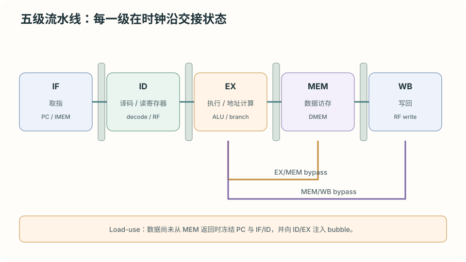
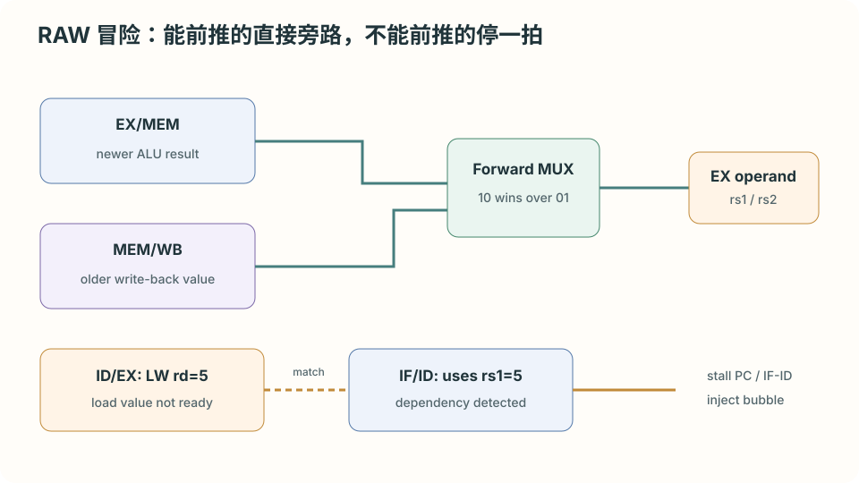

RISC-V 处理器 FPGA 实现：从 RV32I 编码到流水线冒险控制
从 ISA 与微架构的区别出发，拆解 RV32I 指令格式、五级流水线、数据前推与 load-use stall，并用可运行 RTL 测试验证立即数生成和冒险检测。
01 / 从指令集到处理器：先分清 ISA 与微架构
RISC-V 不是某一颗 CPU，也不是一份固定的五级流水线电路。它首先是一套指令集架构（ISA）：规定软件可见的寄存器、指令编码、异常行为和内存访问语义；流水线级数、旁路网络、缓存和总线则属于具体处理器的微架构。

本章围绕 RV32I 基础整数 ISA，XLEN=32 讨论教学处理器。RV32I 定义 32 个 32-bit 通用寄存器 x0–x31，其中 x0 读取恒为零；它是 load-store 架构，算术指令操作寄存器，load/store 才访问内存。ISA 不规定必须使用 IF/ID/EX/MEM/WB 五级流水线，因此一个单周期核、多周期核或深流水线核都可能实现相同的架构行为。
还要区分 RV32I 与扩展：例如 M 是乘除法扩展，C 是压缩指令扩展，A 是原子操作扩展。只实现 RV32I 的核不能假设编译器会生成 mul、压缩指令或原子指令；编译参数、ABI 和测试配置必须与实际支持集合一致。RISC-V Unprivileged ISA · RV32I 2.1。
因此，一个可验证的 CPU 项目应先写出支持清单：指令子集、对齐规则、异常/中断、内存映射、复位 PC、总线时序、是否支持 C 扩展，以及未实现指令如何处理。把“能跑一个 C 程序”当作 ISA 合规证明是不够的。
02 / 指令编码：寄存器字段固定，B/J 立即数不是简单切片

常见介绍会把 RV32I 说成六种“完全独立格式”。更精确的说法是：基础格式为 R、I、S、U；条件分支使用 B 型立即数变体，无条件直接跳转使用 J 型立即数变体。所有基础指令为 32-bit 定长编码；没有 C 扩展时，IALIGN=32，指令地址需要 4-byte 对齐。
寄存器字段位置在格式间保持一致：rd=inst[11:7]、rs1=inst[19:15]、rs2=inst[24:20]。立即数则不能统一取 inst[31:20]：I 型从 [31:20] 取 12 位；S 型拼接 [31:25] 与 [11:7]；B 型拼接 {inst[31], inst[7], inst[30:25], inst[11:8], 1'b0}；J 型拼接 {inst[31], inst[19:12], inst[20], inst[30:21], 1'b0}。立即数符号位均来自 inst[31]。
这不是随意打乱位序。B/J 偏移以 2-byte 为单位编码，最低位隐含为 0；这种布局让符号扩展可与译码并行，减少立即数左移所需的硬件重排。规范中的 Base Instruction Formats 与 Immediate Encoding Variants。
跳转目标也有区别：B 型分支目标为当前 PC 加符号扩展后的 B-immediate；JAL 将 PC+4 写入 rd；JALR 用 rs1 加 I-immediate 形成目标，并将目标最低位清零。没有 C 扩展时，taken branch / jump 的目标仍须满足 4-byte 对齐约束。
03 / 五级流水线的数据流：每个阶段必须携带完整控制信息
IF 根据 PC 取指并计算顺序地址；ID 解码 opcode/funct 字段、读取寄存器并生成控制信号；EX 执行 ALU 运算、比较分支或计算访存地址；MEM 访问数据存储器；WB 选择 ALU 结果或 load 数据写回 rd。四组流水级寄存器（IF/ID、ID/EX、EX/MEM、MEM/WB）必须保存后续阶段所需的数据和控制位。
例如 lw x5, 0(x1) 在 EX 计算地址、MEM 读取内存、WB 才得到寄存器写回值。若只把 ALU 结果传到 MEM/WB，却忘记同步携带 rd、RegWrite、MemToReg 等控制信息，最终可能把正确数据写入错误寄存器，或把不应写回的指令误写回。
理想无停顿时，五级流水线在填满后每周期可以完成一条指令；这描述的是吞吐率，不代表单条指令只花一个周期。单条指令从 IF 到 WB 仍跨越多个周期。真实 CPI 会受到 load-use、分支、存储器等待、总线 backpressure 和 cache miss 等影响。
| 指令 | C1 | C2 | C3 | C4 | C5 | C6 | C7 | C8 | C9 |
|---|---|---|---|---|---|---|---|---|---|
| I1 | IF | ID | EX | MEM | WB | ||||
| I2 | IF | ID | EX | MEM | WB | ||||
| I3 | IF | ID | EX | MEM | WB | ||||
| I4 | IF | ID | EX | MEM | WB | ||||
| I5 | IF | ID | EX | MEM | WB |
PC、指令、源操作数、目的寄存器编号、写使能、访存控制和异常状态都必须与同一条指令一起穿过流水线。控制信号与数据错位，是教学 CPU 中很常见的结构性 bug。
04 / 数据冒险：Forwarding、load-use stall 与分支冲刷

考虑相邻两条指令：add x5, x1, x2 后面紧跟 sub x6, x5, x3。第二条指令在 ID 读寄存器时，x5 可能仍是旧值。若等到第一条指令 WB 再读取，流水线必须停很多周期。Forwarding（旁路）在 EX 输入端加入 MUX：若 EX/MEM 的 rd 匹配当前 rs1/rs2、RegWrite 有效且该级不是尚未取回数据的 load，选择 EX/MEM；否则若 MEM/WB 匹配，选择 MEM/WB；否则选择寄存器堆读值。若两级都匹配，优先选择更新的 EX/MEM。
但 lw x5, 0(x1) 后紧跟 add x6, x5, x2 时，load 数据直到 MEM 阶段后才可用，紧接的 EX 阶段不能从普通 EX/MEM ALU 结果旁路得到正确数据。典型五级流水线需要停一拍：冻结 PC 与 IF/ID，向 ID/EX 注入无副作用 bubble，然后再从可用阶段前推 load 数据。
控制冒险是另一类问题。若分支在 EX 才决定 taken，预测不跳转的设计在分支成立时必须冲刷已经取入的错误路径指令。分支比较放在 ID 或增加预测器会改变时序、冒险检测和恢复逻辑；不要把“数据前推”误认为已经解决所有流水线冒险。
05 / 可运行实验：立即数生成器与冒险检测单元
本仓库提供两个范围明确的 RTL 单元：rv32i_imm_gen 负责 I/S/B/U/J 立即数重组；rv32i_hazard_unit 负责 EX/MEM（排除尚未返回数据的 load）、MEM/WB 前推优先级和 load-use 检测。它们是 CPU 子模块，不是完整 RV32I 核；没有指令译码、寄存器堆、分支冲刷、异常、总线或缓存。
// B-type immediate: sign-extend and reassemble the split fields
IMM_B: imm = {{19{instr[31]}}, instr[31], instr[7],
instr[30:25], instr[11:8], 1'b0};
// Forwarding priority: newest producer wins
if (ex_mem_regwrite && ex_mem_rd != 0 && ex_mem_rd == ex_rs1)
forward_a = 2'b10;
else if (mem_wb_regwrite && mem_wb_rd != 0 && mem_wb_rd == ex_rs1)
forward_a = 2'b01;运行定向测试：
iverilog -g2012 -Wall -s tb_rv32i_frontend_units \
-o /tmp/rv32i.vvp \
examples/rtl/rv32i_frontend_units.v \
examples/tb/tb_rv32i_frontend_units.v
vvp /tmp/rv32i.vvp
# PASS tb_rv32i_frontend_units (...)测试覆盖负立即数、S/B/J 分散字段、U 型高位立即数、默认选择、EX/MEM 优先、load 不从 EX/MEM 错误前推、MEM/WB 旁路、x0 不旁路，以及只对实际使用的源寄存器触发 load-use stall。完整回归由 bash scripts/run_rtl_tests.sh 统一执行。
06 / 从子模块测试走向 ISA 验证与 FPGA SoC
完整 CPU 验证至少分成三层。第一层是模块级定向测试：立即数、ALU、寄存器堆、load/store 对齐、分支比较、前推和 stall。第二层是流水线程序测试：连续 RAW、load-use、分支 taken/not-taken、跳转、x0 写入、非法指令与复位。第三层才是 ISA 级测试和系统级软件：用与实现能力一致的配置编译测试程序，检查架构状态和内存副作用。
RISC-V Architectural Certification Tests 提供架构认证测试，但项目明确说明这些测试并不替代完整处理器验证。它们也要求 DUT 配置、linker script、参考模型和平台宏一致。还应补充随机指令测试、差分参考模型、形式属性（例如 x0 恒为零、写回只对有效指令发生）和覆盖率分析。
要把 C 程序放进 FPGA，必须先确定 reset vector、指令存储器和数据存储器地址范围、字节寻址与端序、UART MMIO 地址、启动代码、栈和链接脚本，再使用与 ISA/ABI 匹配的交叉编译器。例如 RV32I + ILP32 应明确设置 -march=rv32i -mabi=ilp32，不能让工具链默认启用 DUT 未实现的扩展。
自测：为什么 load-use 依赖通常需要停一拍，而紧邻的 ALU-ALU 依赖可以前推？
ALU 结果在 EX 阶段末可由 EX/MEM 旁路提供；load 的数据要等 MEM 阶段读出，下一条指令紧接着进入 EX 时数据尚未到达。因此典型五级流水线冻结前端一拍并注入 bubble，再从后续可用流水级前推 load 数据。